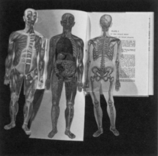

Multi-image or audio-visual design is very close to theater and pertormance and in tact often incorporates it, integrating media such as film and slides, sound and music. Like performance this requires complex management of different technologies based on synchronized scoring or scripting within a predetermined, common time frame. Like performance, it depends heavily on three-dimensional space and does not translate well into film or videotape.
László Moholy-Nagy wrote that the illiterate of the future would be the person who couldn't take a photograph. His vision was holistic. His photography and movies explored the abstract and formal issues of the static and dynamic aspects of photography and the cinema, and their relationship to text. His diagrammatic notational score for the Dynamic of the Metropolis explores visual and verbal means of interrelating the different time frames of sound and moving image in the print medium. In fact, the score itself becomes a piece of meta-art. It is not hard to imagine Moholy using a computer. Gyorgy Kepes, in Language of Vision and other writings, is eloquent on the inter-connectedness of art, technology, and design, and the need to refresh language to reflect the changing realities of life.
Karl Gerstner, who successfully straddles the world of art and design and was an original member of Das Freundes+, wrote the classic, unfortunately out of print, Designing Programmes (1963).
Karl Gerstner, who successfully straddles the world of art and design and was an original member of Das Freundes+, wrote the classic, unfortunately out of print, Designing Programmes (1963).